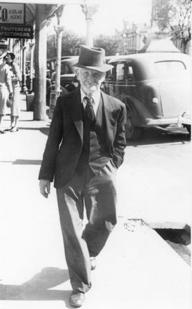

Grandma (right) with Janet McIvor, Ginny, Doddy and Angus at Eaton's Cottage (Hempsted Road)
Born: 17 Jun 1911, Gore, South Island, New Zealand
Married: Richard Sowdon, 24 Apr 1936, at St Luke’s Church Oamaru, New Zealand. (See Sowdon page)
Died: 22 Aug 1987
Children: Living, Living, and Living
Occupation: Farmer's wife, mother and housewife
Notes: Two diaries were written by ‘Ruby’ from 1936 to 1948, covering her journey from New Zealand to England after her marriage and her impressions and thoughts as a farmer’s wife in Essex during WWII. Both diaries are in the possession of Paul I Marshall. (A link to the diaries will be available later).
Born: 20 Dec 1916
Married: 10 Nov 1948
Died: 03 Apr 1986
Children: Living McIvor, Living McIvor, Living McIvor & Living McIvor.
Occupation: Former Royal Navy officer during WWII. Became deputy Director of the World Bank. Usher at Elizabeth II wedding in 1947.
Notes:
Born: 10 Aug 1901, Palmerston North, NZ.
Married: 10 Nov 1948
Died: 21 Dec 1980
Children: James Frederick Taylor, Bruce Gordon Taylor and Living Taylor.
Occupation: Housewife.
Notes:
Born: 02 Jan 1903, Palmerston North, NZ.
Married:
Died: 30 Apr 1987, Nelson, NZ. Buried Marsden Valley RSA Cem, Stoke, Nelson
Children:
Occupation: New Zealand Army QSM, Mason
Notes:
Born: 18 Mar 1904, Dannevirke
Married: 17 Apr 1929, Winnie May Howell at Oamaru, NZ
Died: 15 Jun 1950, Ewart Hosp, Wellington, NZ. Buried plot 504 Mem Lwn, Taita Cem Lower Hutt
Children: Living McIvor, Living McIvor, Baby McIvor
Occupation: Telephone technician NZ post office
Notes:
Born: 08 Oct 1905, Dannevirke, New Zealand
Married: Never married
Died: 01 Aug 1949, Dunedin, New Zealand
Occupation: Postman
Notes:
Born: 04 Jul 1907, Hawera, New Zealand
Married: 24 Oct 1927, Fred Johnston, Oamaru, New Zealand
Died: 26 Apr 1977, Oamaru, New Zealand
Children: Freida Caird Johnston, Noel Johnston
Occupation:
Notes:
Born: 13 Feb 1909, Gore, New Zealand
Married: 1933, Esther Edna Kennedy, Invercargill, New Zealand
Died: 18 Apr 1982, 228a Herbert St., Invercargill, New Zealand
Children: Living McIvor, Living McIvor
Occupation: Director
Notes:
Born: 23 July 1914, Dunedin, New Zealand
Married: 1950, Herbert l Strang, Christchurch, New Zealand
Died: 25 August 2005, Christchurch, New Zealand
Children: Geoffrey Strang
Occupation:
Notes:

Born: 01 Sep 1863, Dunedin, New Zealand.
Married: Nellie Caird 22 Aug 1900, Palmerston North, New Zealand.
Died: 14 Nov 1941, Oamaru, New Zealand.
Children:
Occupation: Tailor
Married: 21 Aug 1861, Dunedin, Otago, New Zealand
Died: 07 Nov 1912, 19 Begg Street, St Kilda, New Zealand.
Children: Joseph McIvor, 16 Sep 1862; William McIvor, 01 Sep 1863; Samuel McIvor, 17 Apr 1866; Frederick Parker McIvor, 06 Mar 1868; Charles Craig McIvor, 15 Jun 1870; Elizabeth McIvor, 09 Oct 1873; Priscilla McIvor, Abt. 1877; Georgina McIvor, 1880; Ebenezer Adolphus McIvor, 1882; Mary Prentice McIvor, 04 Jun 1886;
Occupation: Carpenter
Born: 1780, Parish of Oldrick, nr Thurso, Caithness, Scotland.
Married: Elizabeth Glendining
Died:
Children: James McIvor 22 Sep 1819, Samuel McIvor 31 Mar 1821, Elizabeth McIvor 20 Mar 1828, Alexander McIvor Abt. Jan 1833, William McIver Abt. 1834, Mary McIvor 1835.
Occupation: Soldier 42nd Royal Highland Regiment, Black Watch C/Sgt. Served under General Sir John Moore at Corunna in 1809 where he was reported to be one of Moore’s stretcher bearers. Also Pyrennes, Nivelle, Nive, Orthes and Toulouse. Also served with Wellington at Waterloo, receiving the Waterloo medal. Served in Capt. Thomas Wade's Company. Discharge Wounds received in left ankle at Quatre Bras in 16 June 1815 (1816 according to Thomas B Smyth archivist to The Black Watch).
Notes: C/Sgt James McIver received the Military General Service Medal (MGSM) and Waterloo Medal. Last known whereabouts was in 1925 when in the collection of a Capt. John Stewart.
Born:
Married: Anne Stephen (Stivens).
Died:
Children:
Occupation: